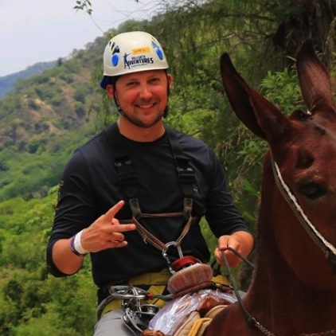

About Me
Hello world! My name is Gregory Frank Horrocks, but you can call me Greg for short. I am a 31 year old living in the great state of North Carolina, where I have lived most of my life. I enjoy being outdoors, preferrably during the Spring through Fall months, biking, hiking, playing disc golf and hanging out at the beach. When I'm not outdoors, I enjoy playing PC and board games, building stained glass art and watching movies.
If I were to pick one domesticated animal to live with the rest of my life, I would choose canines. The bond you can create with these animals can be very deep and sometimes stronger than some human relationships because they are unconditional. There isn't anything in the world a dog loves more than having a caring and strong owner and sidekick in this world!